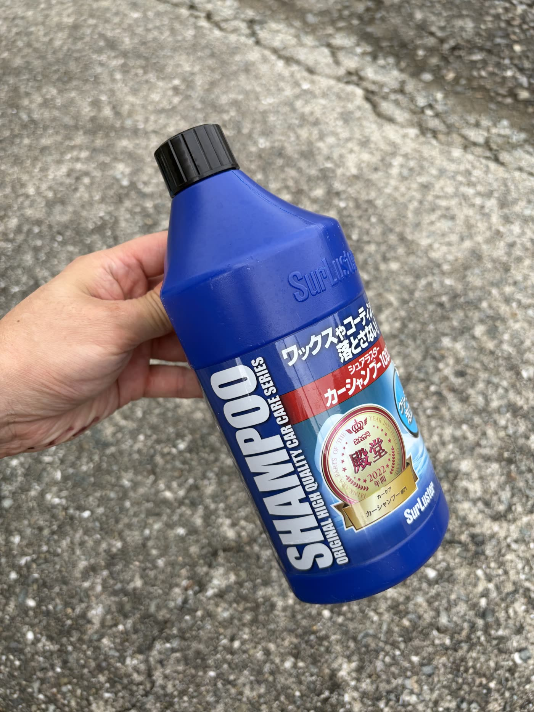
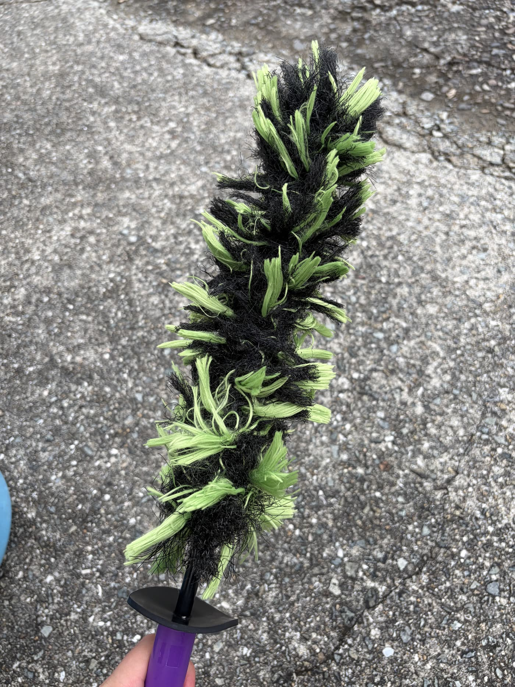
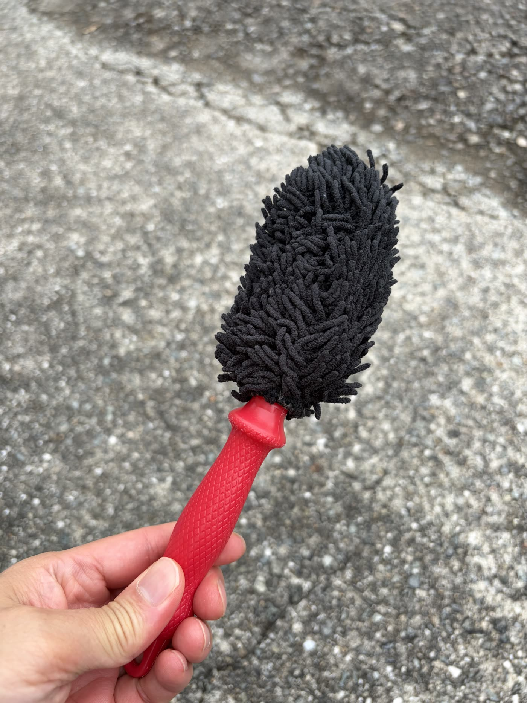
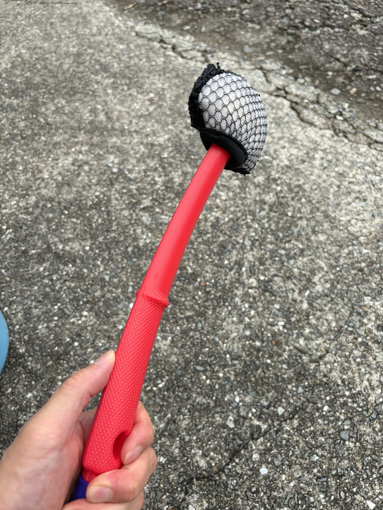
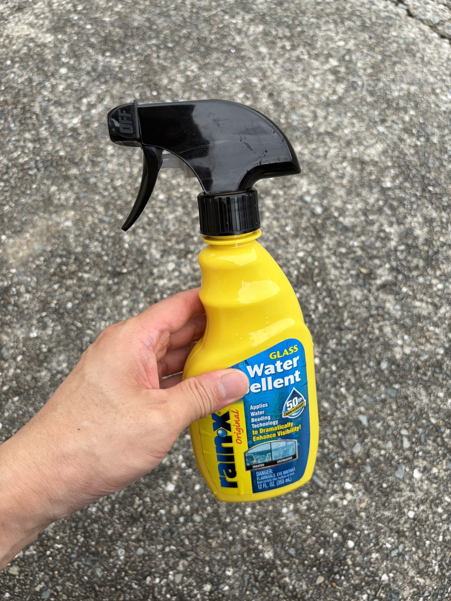
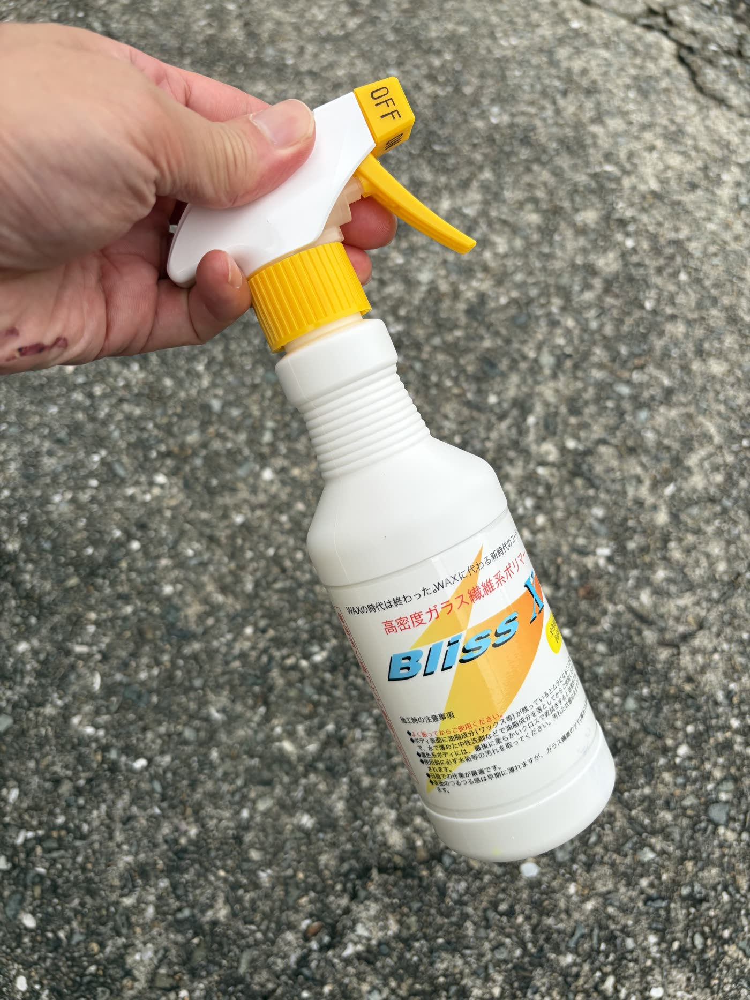

About
このページでは、洗車のたびに実際に手に取っている道具だけを紹介しています。 写真は自分の作業風景から撮ったもので、動画も実際の洗車の様子です。 気になった道具があれば、各カードの「Yahoo!ショッピングで見る」から探せます。
01
準備 — バケツまわり
洗車の土台になる部分。バケツ底にグリットガードを敷いておくだけで、スポンジが泥や砂を再び拾いにくくなり、 拭き傷（スワールマーク）の予防につながる。
実際にバケツ&グリットガードを使っている様子。
02
洗浄・足回り — シャンプー&ホイールブラシ
ボディをシャンプーで洗い上げたら、ブレーキダストがこびりつくホイールへ。 形状違いのブラシ3本を、場所に応じて使い分けている。




03
仕上げ — 撥水&ガラスコーティング
拭き上げた後の最後の工程。窓ガラスの視界を確保する撥水剤と、ボディ用のガラス繊維系コーティングを使い分けている。

